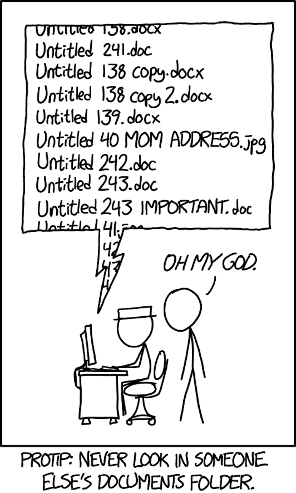
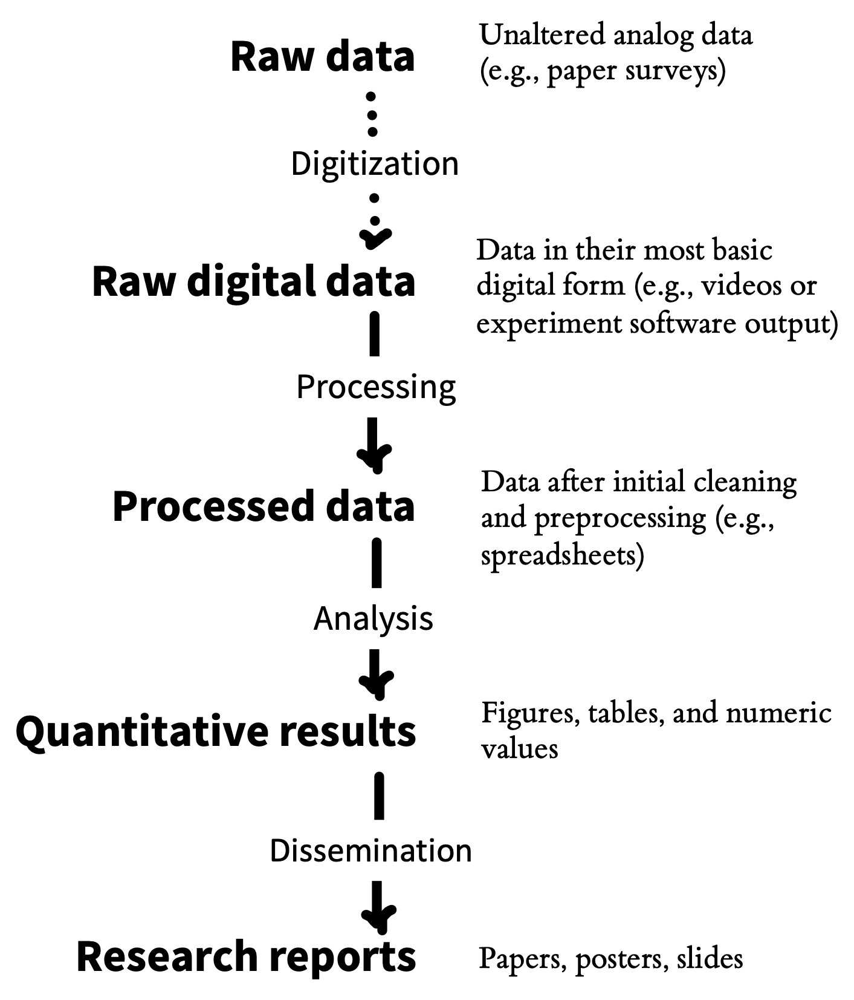
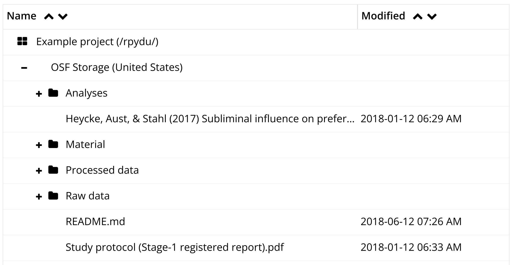
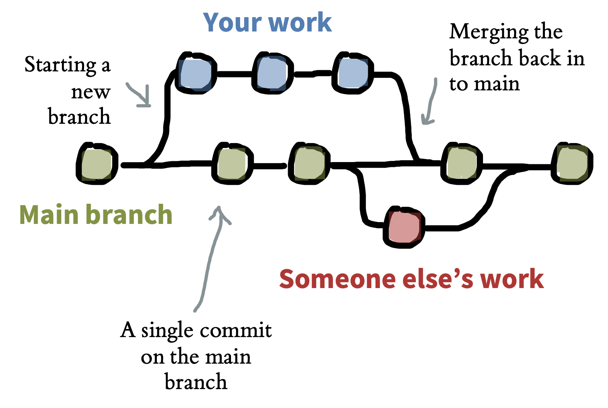
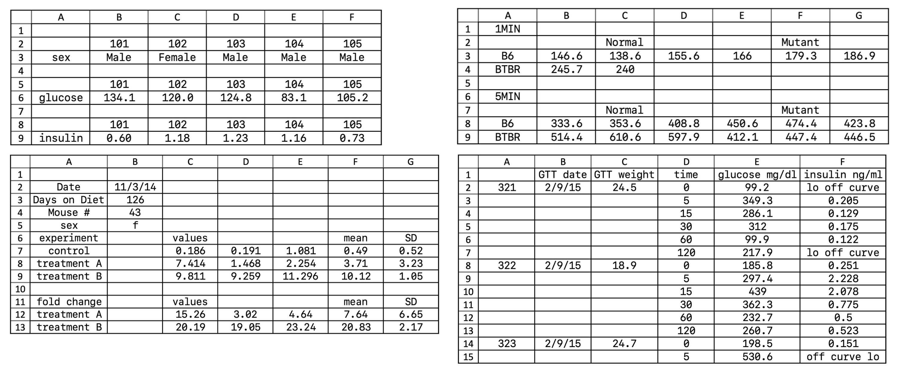
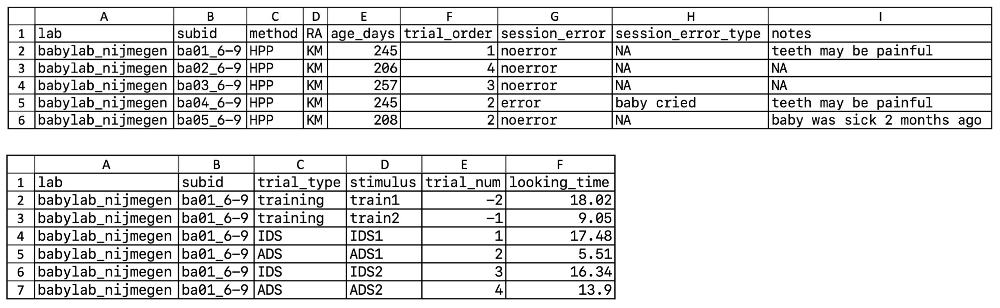
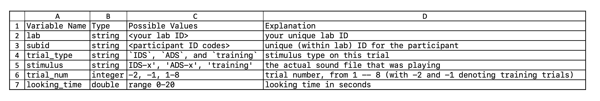
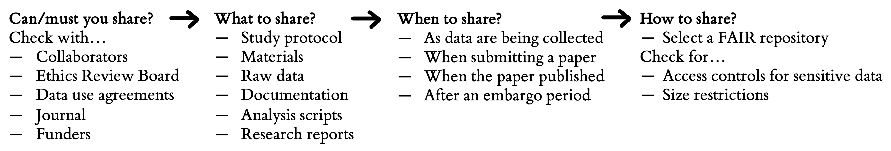

13 项目管理
注记learning goals
- 高效且透明地管理你的研究项目
- 发展数据组织策略
- 通过确保研究产品（如数据和分析代码）findable、accessible、interoperable、reusable（FAIR），优化它们的共享
- 讨论共享研究产品时可能面临的伦理约束
你最亲近的合作者，是六个月前的你自己，但你不回邮件。
—Karl Broman (2015), quoting @gonuke on Twitter
你是否曾经回到一个旧项目文件夹，发现里面是一团乱麻，文件名像 analysis-FINAL、analysis-FINAL-COPY 和 analysis-FINAL-COPY-v2？到底哪个文件才是真正的最终版本！？或者，你也许花了几个小时寻找一个要发给导师的数据文件，最后惊恐地发现它只存放在你的旧笔记本电脑上，而那台电脑在某个困倦的周日早晨被你泼了一整杯咖啡，硬盘灾难性损坏。这些经历可能会让你对 Karl Broman 上面的俏皮话很有共鸣。良好的项目管理实践不仅让你更容易和别人分享研究，也会带来更高效、更不容易出错的 workflow，避免给未来的自己制造头痛。本章讨论如何管理研究 workflow 的所有产品：方法 protocol、材料、1 数据和分析脚本。我们尤其关注如何以符合 open science 实践的方式管理项目，最大化它们对你自己和更广泛研究共同体的价值（最大化透明度）。
1 这里我们用“materials”覆盖另一个研究者为了重复你的研究可能需要的一系列东西，例如刺激、调查工具和计算机实验代码。

2 世界上最古老的科学期刊是 Philosophical Transactions of the Royal Society，首次出版于 1665 年。
当我们谈到研究产品时，通常会想到学术期刊论文。自 17 世纪科学革命以来，论文一直是科学家的主要交流方式。2 但论文只提供研究的书面摘要；它们不是原始研究产品。近年来，越来越多人呼吁增加研究产品共享，比如材料、数据和分析代码 (Munafò 等 2017)。如果共享得当，这些其他产品可以和摘要文章一样有价值：共享刺激材料可以被创造性地复用于新研究；共享分析脚本可以复现所报告的结果，并成为新分析的模板；共享数据可以支持新的分析或 meta-analyses。事实上，许多资助机构以及一些期刊现在要求公开共享研究产品，除非存在正当伦理或法律约束，例如敏感医学数据 (Nosek 等 2015)。
数据共享尤其受到强烈关注。共享数据与许多收益相关，包括错误检测 (Hardwicke 等 2021)、创造性复用并产生新发现 (Voytek 2016)、增加引用 (Piwowar 和 Vision 2013) 以及发现欺诈 (Simonsohn 2013)。根据调查，研究者原则上通常愿意共享数据 (Houtkoop 等 2018)；但遗憾的是，在实践中，他们经常并不共享，即便你直接向他们索取 (Hardwicke 和 Ioannidis 2018)。作者常常根本不回复；即便回复，他们也经常报告数据已经丢失，因为数据存储在一个放错地方或损坏的硬盘上，或者能够访问数据的团队成员已经联系不上 (Tenopir 等 2020)。
如 章 3 中所讨论，即便数据被共享，它们也并不总是以其他研究者甚至原作者自己能够轻松理解和复用的方式格式化！这个问题凸显了metadata的关键作用：也就是记录你共享的数据（以及其他产品）的信息，包括 README 文件、记录数据集本身的codebooks，以及提供复用法律限制的许可证。本章会贯穿讨论 metadata 的最佳实践。

健全的项目管理实践和研究项目共享，是相互强化的目标，它们会给你自己、更广泛的研究共同体以及科学进步都带来收益。良好项目管理实践的一个特别重要收益，是它们支持 reproducibility。如 章 3 中所讨论，计算可复现性意味着能够把研究报告中的任何分析结果的 provenance 追溯回原始来源。这意味着能够重建从数据收集到数据文件、经过分析规格、再到文本、表格和图中报告的研究结果的整条分析链。如果数据收集被恰当记录，并且数据被存储、组织和共享，那么某个特定结果的 provenance 相对容易验证。但一旦这条链（图 13.2）断裂，就很难重建 (Hardwicke 等 2018)。这就是为什么从一开始就把良好项目管理实践纳入研究 workflow 至关重要。
本章中，你会学习如何高效且透明地管理研究项目。3 朝这些目标努力可以创造一个良性循环：如果你把研究产品组织得好，之后就更容易共享；而如果你假设自己会共享，就会更有动力把工作组织得更好！我们先讨论项目管理的一些重要原则，包括文件夹结构、文件命名、组织和版本控制。然后具体聚焦数据，讨论数据共享最佳实践。最后，我们讨论应该共享哪些研究产品，以及某些情境下可能限制你共享能力的潜在伦理问题。
3 本章，尤其最后一节，大量借鉴了 Klein 等 (2018)。这是一篇关于研究透明度的文章，我们中的几位也参与了撰写。
注记case study
ManyBabies, ManySpreadsheetFormats!
ManyBabies 项目是心理学中 “Big Team Science” 的一个例子。一组发展心理学研究者（包括我们中的一些人）担心本书一直在讨论的 reproducibility、replicability 和实验方法问题，于是建立了一个大型合作项目，来重复发展科学中的关键效应。这些研究中的第一项是 ManyBabies 1 (The ManyBabies Consortium 等 2020)，它研究婴儿对 baby-talk（也称为 “infant directed speech”）的偏好。
核心团队原本预计会有少数几个实验室贡献数据，但经过为期一年的数据收集后，他们最终收到了来自世界各地 69 个实验室的数据！这种兴趣涌现显示出共同体对这类合作科学有很大热情。不幸的是，它也制造了巨大的数据管理头痛。各个实验室独特的数据格式偏好需要被重组，以适配单一标准化分析流程；随之而来的是各种复杂问题和令人哭笑不得的情形 (Byers-Heinlein 等 2020)。
单个实验室所做的所有具体格式改动本身都是合理的，比如为了清楚而修改列名、把模板合并到单个 Excel 文件、改变单位（例如从秒变成毫秒）。但这些改动合在一起，为核心分析团队制造了一个非常棘手的数据验证问题，需要数十小时编码和人工检查。数据检查至关重要：一个实验室数据中的错误在验证期间被标记出来，并导致最终数据集中删除该数据的痛苦决定。在未来 ManyBabies 项目中，这个团队已经承诺使用共享数据验证软件（https://manybabies.org/validator），以确保单个实验室上传的数据文件符合共享标准。
13.1 项目管理原则
很多项目管理问题都可以通过遵循一个非常简单的文件组织系统来避免。4 对于那些“成长于”在自己电脑本地管理文件，并用 manuscript-FINAL-JS-rev1.docx 这类名字给同事发送数据文件和手稿版本的研究者来说，这个系统的几个方面可能会让人不安。不过，稍加练习，这种新工作方式会开始变得直观，并带来实质收益。
4 本章会谈研究产品管理，这是项目管理的一个重要部分。我们不会谈项目管理的其他方面，例如日程安排、任务管理或项目沟通。这些都很重要，只是稍微超出一本实验方法书的范围。
原则如下：
- 项目中每个文档都应该只有一个权威副本，其名称说明它是什么。例如，
fifo_manuscript.Rmd或fifo_manuscript.docx是 “fifo” 项目作为期刊论文的写作稿。 - 每个文档的位置应该位于一个文件夹中，而这个文件夹能唯一标识该文档在项目中的功能。例如，
analysis/experiment1/eye_tracking_preprocessing.Rmd很清楚是对实验 1 眼动数据分析做预处理的文件。 - 所有合作者都应该可以通过云端访问完整项目，可以使用版本控制平台（例如 GitHub）或另一个云存储提供商（例如 Dropbox、Google Drive）。
- 所有文本和基于文本的文档（至少包括数据、分析代码和手稿文件）的修订历史都应该被归档，使先前版本可访问。
记住这些原则后，我们讨论项目组织、版本控制和文件命名的最佳实践。
13.1.1 组织你的项目
在最大程度上，所有与项目相关的文件都应该存储在同一个项目文件夹中（配有适当子文件夹），并且位于同一个存储提供商上。有些情况下，由于不同软件包的限制，这并不实际。例如，在许多情况下，一个团队会通过 GitHub 管理数据和分析代码，但决定用 Google Docs、Overleaf 或另一个协作平台共同写作。（要求所有合作者都使用他们不熟悉的版本控制系统也可能很困难。）这种情况下，最终论文仍然应该以某种方式链接到项目 repository。5
5 使用这种拆分 workflow 时出现的最大问题，是需要确保写作产品可复现。我们会在 章 14 中介绍这个过程。
图 13.3 展示了一个存储在 Open Science Framework 上的示例项目。顶层文件夹包含分析、材料、原始数据和处理后数据（分开保存）的子文件夹。它还包含论文手稿，而且关键是有一个文本格式的 README 文件来描述项目。README 是记录作者想要与研究产品关联的其他 metadata 的好方式，例如下面会解释的许可证。

组织研究项目子文件夹有许多合理方式，但通常都会有材料、数据、分析和写作这些大类。6 在一些项目中，例如涉及多个实验或复杂数据类型的项目，你可能不得不采用更复杂的结构。在我们的许多项目中，像 /data/raw_data/exp1/demographics 这样的路径并不少见。关键原则是创建一种层级结构，让子文件夹唯一标识其中所包含研究产品在更广泛空间中的部分，也就是说，/data/raw_data/exp1 包含实验 1 的全部原始数据，而 /data/raw_data/exp1/demographics 包含该特定实验的全部原始人口统计数据。
6 我们喜欢 Project TIER（https://www.projecttier.org）所采用的方案，它对文件结构和命名惯例提供了非常清楚的指导。TIER 主要为复制粘贴 workflow 设计，这与我们主要倡导的 “dynamic documents” workflow 稍有不同（例如使用 R Markdown 或 Quarto，如 附录 C 中所示）。
13.1.2 版本控制
大概每个曾经电子协作的人都经历过这种挫败：你正在编辑一个文档，结果发现自己编辑的是错误版本；也许你正在处理的问题已经被修正，或者你正在添加的部分已经被别人写好了。第二个常见挫败来源，是当你在项目中走错路时，例如用一种行不通的方式重组手稿，或用后来证明短视的方式重构代码。
这两个问题都可以由现代版本控制系统解决。这里我们聚焦使用 Git，这是使用最广泛的版本控制系统。Git 是版本控制的通用好方案，但很多人，包括我们中的几位，并不喜欢用它来协作写手稿。这里我们会介绍 Git 及其原则，同时指出 Google Docs 和 Overleaf7 等线上协作工具可能更适合写 prose（相对于代码）；我们会在 章 14 中更深入讨论这个主题。
7 Overleaf 后端其实由 Git 支持！

Git 是创建和管理项目的工具，这些项目称为repositories。Git repository 是一个目录，其修订历史通过一系列 commits 来追踪，也就是项目状态的快照。这些 commits 可以形成一棵带有不同 branches 的树，例如两个项目贡献者同时在两个不同部分工作时（图 13.4）。这些 branches 之后可以被 merged，如果变更冲突则可能需要人工介入，否则可以自动完成。
通常，Git repositories 会托管在 GitHub 这类线上服务上，以促进协作。在这个 workflow 中，用户在自己电脑上的 repository 本地版本中做出修改，并把这些修改 push 到线上 repository。另一个用户随后可以把这些修改从线上 repository pull 到自己的本地版本。线上的 “origin” 副本始终是项目的权威副本，而且会保存所有变更记录。附录 B 提供了 Git 和 GitHub 的实践介绍，线上和印刷材料中也有各种不错的教程 (Blischak, Davenport, 和 Wilson 2016)。
使用版本控制工具协作，旨在解决我们一直讨论的许多问题：
- 远程托管的 Git repository 是你工作的云端备份，意味着它不太容易因意外而被抹除。8
- 由于有版本历史，如果你发现自己一直在走死路并想回滚修改，可以访问先前草稿。
- 通过创建新 branches，你可以为项目创建另一条平行历史，从而尝试重大修改或新增内容，而不干扰 main branch。
- 项目的 commit history 会标明每个 commit 的作者和日期，便于记录保存和协作。
- 自动 merging 可以允许对手稿或代码库不同部分进行同步编辑。9
8 公元前 48 年，Julius Caesar 意外烧毁了亚历山大图书馆的一部分，那里保存着许多珍贵古代作品的唯一副本。直到今天，许多科学家显然还保留着把重要信息单份存放在脆弱地点的习惯。即便在云计算时代，硬盘故障仍然是一个出人意料地常见问题来源！
9 版本控制不是魔法；如果你和合作者编辑同一行或几行，就必须手动 merge 你们的修改。但 Git 至少会告诉你冲突在哪里！
组织一个用于协作并托管在远程平台上的项目 repository，是走向共享的重要第一步！我们的许多项目（比如这本书）实际上是 born open：我们把所有工作都放在公开托管的 repository 上，让每个人都能看到 (Rouder 2015)。“working in the open” 这种哲学从一开始就鼓励良好组织实践。一开始可能会让人不舒服，但这种不适很快会消失，因为你会意识到基本上没人会看你正在进行中的项目。
许多人对公开共享进行中研究提出的一个担忧，是 “scooping” 的可能性，也就是其他研究者从 repository 中获得一个想法甚至数据，并在你之前写出论文。对这个担忧，我们有两个回应。第一，这类 scooping 的经验频率很难确定，但可能非常低；我们不知道任何有记录的案例。多数时候，问题是让人们关心你的实验，而不是人们太关心以至于会用你的数据或材料发表！用 Gary King 的话说 (King 和 Shieber 2013)：“The thing that matters the least is being scooped. The thing that matters the most is being ignored.” 另一方面，如果你所在研究领域被你认为竞争激烈，或确实存在这类 shenanigans 的显著风险，那么很容易在准备更广泛共享之前，把 repository 的一部分或全部在合作者之间保持私有。我们描述的所有收益仍然会累积。对于组织和托管得当的项目，共享材料、数据和代码通常只需要两步：（1）把托管 repository 设为公开；（2）把它链接到 Open Science Framework 这类归档存储平台。
13.1.3 文件名
正如 Phil Karlton 据说说过的，“计算机科学中只有两件难事：cache invalidation 和命名。” 对计算机科学成立的事情，对一般研究也成立。10 命名文件很难！一些非常有组织的人依赖 INFO-r1-draft-2020-07-13-js.docx 这类系统生存，意思是“INFO 项目 2020 年 7 月 13 日第 1 次修订草稿，JS 编辑”。但这种系统需要大量规则和纪律，而且要求项目中的每个人都完全买账。
10 我们不会讨论 cache invalidation；那是计算机科学中更技术性的问题，超出了本书范围。
另一方面，如果你是在一个层级组织的版本控制 repository 中命名文件，命名问题会显著变简单。突然之间，你有了一个让名称有意义的语境。单独看，data.csv 是一个糟糕的数据文件名。但在某个项目 repository 的语境中，这个名字实际上信息很充分：README 说明只有一个实验，repository 结构让这个文件位于名为 raw_data 的文件夹中，而 commit history 指明文件的提交日期和作者。
正如这个例子所示，命名在脱离语境时很难。所以我们的规则是：用文件所包含的内容来命名。不要用文件名传达是谁编辑、何时编辑，或它应该放在项目哪里。这些是 metadata，应该由平台处理。11
11 如果你把文件用邮件发给合作者，平台就不会处理这些信息，这正是为什么你应该共享对完整平台的访问，而不是只共享脱离语境的文件！
13.2 数据管理
我们刚刚讨论了如何一般性地管理项目；本节具体聚焦数据集。数据通常是最有价值的研究产品，因为它们代表了研究生成的证据。当其他科学家能够复用这些证据来独立验证或生成新发现时，我们就最大化了证据价值。然而，许多研究数据即便被共享，也无法复用。在 章 3 中，我们讨论了 Hardwicke 等人 (2018) 关于分析可复现性的研究。但甚至在我们尝试复现分析结果之前，我们必须先看数据。这样做时，我们发现共享数据集中只有 64% 既完整又可理解。
如何确保你的数据得到管理，从而支持有效共享？我们提出四条主要建议：
- 保存原始数据
- 记录数据收集过程
- 为后续分析组织原始数据
- 用 codebook 或其他 metadata 记录数据
下面逐一讨论。
13.2.1 保存原始数据
原始数据有许多形式。对我们许多人来说，原始数据是实验软件返回的数据；对另一些人来说，原始数据是实验开展过程中的视频。无论这些数据是什么形式，都要保存它们！它们常常是检查处理流程中问题的唯一方式，而处理流程会把这些数据从初始状态转为你分析的形式。它们也可能在之后回应关于方法或结果的批评和问题时非常宝贵。如果你需要修正原始数据中的某些内容，不要修改原始文件。制作一个副本，并记录这个副本和原始文件有何不同。12
12 未来的你会感谢现在的你解释了为什么 subject 19 的数据有两个副本，因为你后来回去改了一个 typo。
13 你用于这项任务的具体 repository，很可能会根据你想存储的数据类型和本地监管环境而变化。例如，在美国，存储带有某些字段的去匿名化数据，需要使用通过 HIPAA（相关隐私法律）认证的服务器。许多大学提供 HIPAA-compliant cloud storage，但绝不是全部。
原始数据通常不是匿名化的，甚至可能无法匿名化。匿名化有时意味着修改它们（例如，从某个服务下载的日志可能包含 IDs 或 IP 地址）。或者在某些情况下，如果不投入大量努力并损失数据的一部分价值，匿名化会很困难或不可能，例如视频数据或 MRI 数据 (Bischoff-Grethe 等 2007)。除非你有广泛分发这些可识别数据的具体许可，否则原始数据可能需要以不同方式存储。在这些情况下，我们建议把原始数据保存在具有适当权限的单独 repository 中。例如，在上面描述的 ManyBabies 1 研究中，公共 repository 不包含参与实验室贡献的原始数据，因为团队无法保证这些数据已经匿名化；这些数据改为存储在私有 repository 中。13
你可以使用 repository 的 README 来描述哪些内容被共享、哪些没有共享。例如，README 可以写：“我们提供了最初从 Qualtrics 下载文件的匿名化版本”，或“参与者没有允许公开分发原始视频记录，这些记录保存在安全的大学服务器上。” 关键是，如果你共享派生的表格数据，即便每个读者都无法从原始数据检查这些数字的 provenance，仍然应该能够复现论文中的分析结果。14
14 我们在一些论文中组织原始数据的一种方式，是在 data/ 目录下设置三个不同子文件夹：raw/ 用于原始数据，processed/ 用于匿名化或以其他方式预处理的数据，/scripts 用于做预处理的代码。由于这些文件夹位于 Git repository 中，我们可以把 raw/* 加入 .gitignore 文件，确保它们永远不会被加入 repository 的公开版本，即便它们位于我们本地文件层级中的适当位置。
15 关于 subject identifiers 说一句。它们应该是匿名标识符，比如随机生成的数字，不能与参与者身份（例如出生日期）相连，并且是唯一的。你可能会笑，但我们中有一个人曾在一个实验室里，所有 subject IDs 都是测试日期和参与者姓名首字母。这些 ID 既不唯一，也不匿名。一个常见惯例是给研究一个代号，并给参与者顺序编号；例如，你在一系列关于信息加工的实验中的第一个参与者可能是 INFO-1-01。
一种常见做法是使用参与者标识符，把具体实验数据和人口统计数据表连接起来；如果实验数据是标准化测量的反应，它们很少构成显著识别风险，而人口统计数据表可能包含更敏感且潜在可识别的数据。15 取决于所报告分析的性质，实验数据随后可以以有限风险共享。然后，选定的一组人口统计变量，例如那些不会增加隐私风险但对特定分析必要的变量，可以作为单独文件分发，并在之后重新 join 回数据。
13.2.2 记录数据收集过程
为了理解原始数据的含义，尽可能多地分享它们被收集时的语境会很有帮助。这种做法也有助于传达参与者在实验中的体验。记录这种体验可以采取许多形式。
如果实验体验是一个基于网页的问卷，归档这种体验可以简单到下载问卷源文件。16 对更复杂的研究来说，重建参与者经历了什么可能更困难。这类情形正是视频数据可以发挥作用的地方 (Gilmore 和 Adolph 2017)。一个典型实验 session 的视频记录，可以为其他实验者提供有价值的教程，也可以为论文读者提供良好语境。如果实验体验中有大量互动元素，这一点加倍成立，儿童实验常常如此。例如，在我们的 ManyBabies case study 中，这个项目为许多参与实验室共享了实验 session 的 “walk-through” 视频，为婴儿发展研究创建了一个标准体验 repository。至少，一段实验 session 视频有时也可以很好地归档某个特定语境。17
16 如果它是 Qualtrics .QSF 文件这类专有格式，一个好做法是同时把它转换为简单纯文本格式，这样没有 Qualtrics 访问权限的人也可以打开和复用（这可能包括未来的你！）。
17 只要你获得参与者许可，实验 session 视频也是在关于实验的报告中展示的很好 demo。
无论你保留什么具体文档，创建某种记录把数据和文档连接起来都至关重要。例如，对问卷研究而言，这种文档可能只是一个 README，其中说明 data/raw/ 目录中的数据是在某个特定日期用名为 experiment1.qsf 的文件收集的。这种把数据和材料连接起来的“结缔组织”，在你带着问题回到项目时会非常重要。如果你在数据中发现潜在错误，就会希望能够检查用于收集这些数据的材料的精确版本，以识别问题来源。
13.2.3 为后续分析组织数据：电子表格
数据有许多形式，但在项目的某个阶段，你很可能最终会得到一张装满信息的电子表格。组织良好的电子表格可能决定项目成败！Broman 和 Woo (2018) 的一篇精彩文章列出了良好电子表格设计原则。这里我们强调其中一些原则（按我们自己的、有立场的顺序）：
- 让它成为一个矩形。18 几乎所有数据分析软件，如 SPSS、Stata、Jamovi 和 JASP（以及许多 R packages），都要求数据为表格格式。19 如果你习惯只在电子表格中分析数据，这类表格数据可能没有那么可读，但可读格式会妨碍你想做的几乎任何分析。Figure 13.5 给出了一些非矩形电子表格示例。由于行和列的使用方式不一致，所有这些表格都会让任何分析 package 出问题！
18 把你的数据想成一盘井然有序的寿司，整齐地挤在一起，没有任何空隙。
19 表格数据是 “tidy” data 的前身，我们会在 附录 D 中更详细描述。

- 为变量选择好名字。没有一种命名格式惯例是最好的，但保持一致很重要。我们倾向于遵循 tidyverse style guide，使用由下划线（
_）分隔的小写单词。在有单位时给出单位也很有帮助，例如反应时是以秒还是毫秒为单位。Table 13.1 给出了一些好变量名和坏变量名的例子。
保持单元格格式一致。每一列都应该只有一种类型的东西。例如，如果你有一列数值，不要突然在某个单元格中引入 “missing” 这样的文本数据。这类数据类型混合会在后续造成严重混乱。混合或多重条目也不可行，所以不要把 “0 (missing)” 写成一个单元格值。把单元格留空也有风险，因为它含义不明确。多数软件包都有缺失数据的标准值（例如，
NA是 R 使用的值）。如果你在写日期，请务必使用“全球标准”（ISO 8601），即 YYYY-MM-DD。其他任何格式都很容易被误解。20装饰不是数据。用粗体标题或高亮装饰数据，对人类来说可能似乎有用，但分析软件并不会一致解释甚至识别这些信息（例如，把 Excel 电子表格读入 R 会清除你所有漂亮的高亮和艺术字体），所以不要依赖它。
把数据保存为纯文本文件。CSV（逗号分隔）文件格式是数据的常见标准，多数分析软件都能统一理解（它是一种 “interoperable” 文件格式）。21 CSV 的优点是它们不是 Microsoft 或其他公司的专有格式，并且可以在文本编辑器中检查；但要小心：它们不会保留 Excel 公式或格式！
20 Excel 中的日期值得特别一提，因为它是糟糕问题的来源。Excel 有一个不幸习惯，会把与日期毫无关系的信息解释为日期，并在过程中破坏原始内容。Excel 的日期问题在遗传学文献中制造了无尽恐怖：基因名会自动转换为日期，有时研究者甚至没有注意到 (Ziemann, Eren, 和 El-Osta 2016)。事实上，一些基因名不得不被修改，以避免这个问题！
21 注意 Microsoft Excel 欧洲版本和美国版本输出这些文件的方式存在一些有趣差异！你可能会在某些数据集中看到分号而不是逗号。
基于以上几点，我们建议你避免在 Excel 中分析数据。如果有必要在电子表格程序中分析数据，我们敦促你把原始数据另存为单独 CSV，然后创建一个不同的分析电子表格，以确保保留未被你（或 Excel）操纵过的原始数据。
注记accident report
糟糕变量命名会导致分析错误！
在我们的方法课中，学生经常会先尝试复现一项已发表研究的原始分析，然后再尝试在新参与者样本中重复结果。当 Kengthsagn Louis 查看她感兴趣研究的代码时，她注意到分析代码中的变量命名非常糟糕（大概是因为调查软件就是这样输出的）。例如，一段 Stata 代码看起来是这样的：
gen recall1=.
replace recall1=0 if Q21==1
replace recall1=1 if Q21==3 | Q21==5 | Q21==6
replace recall1=2 if Q21==2 | Q21==4 | Q21==7 | Q21==8
replace recall1=0 if Q69==1
replace recall1=1 if Q69==3 | Q69==5 | Q69==6
replace recall1=2 if Q69==2 | Q69==4 | Q69==7 | Q69==8
ta recall1在把这段代码翻译成 R 以复现分析的过程中，Kengthsagn 和课程助教 Andrew Lampinen 注意到，一些参与者反应被分配给了错误变量。由于变量名不是人类可读的，这个错误几乎不可能被发现。由于这个问题影响了文章的一些推断结论，文章作者很值得肯定地立即发布了更正 (M. B. Petersen 2019)。
故事教训是：晦涩的变量名会隐藏既有错误，并为进一步错误创造机会！有时你可以在实验软件中调整这些变量名，从而避免这个问题。如果不行，请务必创建一个“key”，并立即翻译这些名称，完成后再仔细复查。
13.2.4 为后续分析组织数据：软件
许多研究者并不是通过手动向电子表格输入信息来创建数据。相反，他们收到的是来自网页平台、软件包或设备的输出数据。这些工具通常只给研究者有限控制权，无法充分控制最终表格数据导出的格式。调查平台 Qualtrics 就是一个典型例子，至少目前，它提供的数据不是一行而是两行表头，导致几乎所有分析软件导入都更复杂！22
22 R package qualtRics (Ginn, O’Brien, 和 Silge 2024) 可以提供帮助。
话虽如此，如果你的平台确实允许你控制输出，就可以尝试使用上面列出的良好数据设计原则。例如，给变量（例如 Qualtrics 中的问题）起合理名字！
13.2.5 记录数据格式
即便组织得最好的表格数据，也并不总是容易被其他研究者理解，甚至在一段时间后也不容易被你自己理解。因此，你应该制作一个codebook（也称为data dictionary），明确记录每个变量是什么。Figure 13.7 展示了 图 13.6 底部 trial-level 数据的一个示例 codebook。每一行表示关联数据集中的一个变量。Codebooks 常常描述某一列属于什么变量类型（例如 numeric、string），以及这一列可以出现哪些值。通常还会给出人类可读的解释，提供单位（例如 “seconds”）和数值代码翻译（例如 “test condition is coded as 1”）。
创建 codebook 不一定需要很多工作。几乎任何文档都比没有好！也有几个 R packages 可以自动为你生成 codebook，例如 codebook (Arslan 2019)、dataspice (Boettiger 等 2021) 和 dataMaid (A. H. Petersen 和 Ekstrøm 2019)。添加 codebook 可以显著提高数据的复用价值，也可以避免未来的你和其他人在解码变量名和假设时经历数小时挫败。


13.3 共享研究产品
正如本章一直讨论的，如果你有效管理了研究产品，与他人共享它们就远没有那么吓人，通常只需要把它们上传到 Open Science Framework 这类线上 repository。本节讨论你应记住的一些潜在共享限制，并讨论在哪里以及如何共享研究产品。
13.3.1 你能共享什么，不能共享什么
我们一直主张你共享所有研究产品，尤其是数据。不过在实践中，参与者隐私（以及少数其他约束）会限制你能共享什么。幸运的是，你可以采取一些具体步骤，确保自己既保护参与者、履行义务，又实现数据共享的收益。
除非参与者明确放弃权利，否则心理学实验参与者对隐私有期待，也就是说，任何人都不应能从他们提供的数据中识别出他们。保护参与者隐私是研究者伦理责任的重要部分 (Ross, Iguchi, 和 Panicker 2018)，也需要与共享的伦理要求相平衡（见 章 4）。23
23 Meyer (2018) 对如何在美国语境中处理数据共享相关各种法律和伦理问题，给出了很好的概览。
此外，还有保护参与者数据的法律法规，尽管这些法规因国家而异。在美国，相关法规是 HIPAA，即 Health Insurance Portability and Accountability Act，它限制私人健康信息（PHI）披露。在欧盟，相关法规是欧洲 GDPR（General Data Protection Regulation）。完整处理这些监管框架超出本书范围；你应该向本地伦理委员会咨询合规问题，但下面是我们在仍然共享数据的同时处理这种情况的方式。
在两个框架下，数据的匿名化（或等价地，去识别化）都是关键概念；如果数据符合相关标准，数据共享通常没有问题。根据美国指南，研究者可以遵循 “safe harbor” 标准24；在这个标准下，如果数据不包含姓名、电话号码、电子邮件地址、社会安全号码、出生日期、人脸等标识符，就被认为已经匿名化。因此，只包含参与者 IDs 而不包含这份列表中任何内容的数据，通常可以在没有参与者同意的情况下共享，而不会有问题。25
24 如相关 DHHS 页面所述（https://www.hhs.gov/hipaa/for-professionals/privacy/special-topics/de-identification/index.html）。
25 美国 IRBs 是一群非常去中心化的机构，它们的解释往往差异很大。出于责任或伦理原因，即便美国法律允许数据共享，它们也可能不允许。如果你想和持这种立场的 IRB 争论，可以提到 DHHS 规则实际上根本不把去识别化数据视为 “human subjects” 数据，因此 IRB 可能没有监管权。我们不是律师，也不确定你会不会成功，但也许值得一试。
欧盟 GDPR 也允许共享完全匿名化的数据，但有一个大复杂点。把匿名标识符放入数据文件并移除可识别字段，本身并不足以达到 GDPR 匿名化标准，如果这些数据原则上仍然可以重新识别，因为你保留了把 IDs 与姓名或电子邮件地址等可识别数据相连接的文档。只有当连接标识符和数据的 key 被销毁时，根据这个标准，数据才真正被去识别化。
去识别化并不总是足够。随着数据集越来越丰富，统计重新识别风险会显著上升，使得只要有一点外部信息，就可能把数据匹配到唯一个人。这些风险在语言、生理和地理空间数据中尤其高，但即便简单行为实验也可能存在。在一个有影响力的展示中，只知道一个人两次出现的位置，往往就足以在一个巨大的信用卡交易数据库中唯一识别其数据 (De Montjoye 等 2015)。26 因此，简单地从数据中移除字段是一个好起点；但如果你正在收集关于参与者行为的更丰富数据，可能需要咨询专家。
26 举一个更贴近本书的例子，ManyBabies 项目中的许多贡献实验室记录了每个参与者的测试日期。这个有用且看似无害的信息不太可能识别任何特定参与者，但如果和关于一次实验室访问的社交媒体帖文或旅行记录数据集放在一起，就很容易揭示某个特定参与者身份。
隐私问题在数据共享中无处不在，几乎每个实验研究项目都需要在共享数据之前解决这些问题。对简单项目来说，这些通常是阻碍数据共享的唯一问题。不过，在更复杂项目中，其他担忧也可能出现。资助方可能会具体要求你的数据应在哪里共享。数据使用协议或合作者偏好可能限制你在哪里、何时共享。某些数据类型需要更高敏感性，因为它们比 Stroop 任务中的反应时之类数据后果更严重。这里我们给出一组问题，用来逐步规划共享（图 13.8）。有疑问时，咨询相关本地权威通常是好主意，例如伦理问题咨询伦理委员会，监管问题咨询研究管理办公室。

注记accident report
真的匿名吗？
当我们最初开始教授 Psych 251，也就是 Stanford 的实验方法课程时，这门课最大的贡献之一，只是向学生展示如何在线上做实验。Amazon 的 Mechanical Turk crowdsourcing 服务当时相对较新，我们的 IRB 对这个服务到底是什么并没有很好的理解。我们提出会共享课堂数据，并获得了这种做法的批准。我们的数据集直接从 Mechanical Turk 下载，并包含参与者的 MTurk IDs（长字母数字字符串，看起来完全匿名）。几次经历让我们重新考虑了这个做法！
首先，我们发现 MTurk IDs 在某些情况下会链接到研究参与者公开的 Amazon “wish lists”，这既可能无意间提供关于参与者的信息，也可能甚至为重新识别提供基础（虽然只是少数情况）。这个发现促使我们咨询 IRB，并在课堂实验中提供更明确的同意语言，链接到把 Amazon profiles 设为私有的说明。
然后，稍晚些时候，我们收到一封来自 MTurk 参与者的愤怒邮件，他们通过搜索自己的 MTurk ID 在 GitHub 上发现了自己的数据。虽然他们没有在这个数据集中被识别出来，但这让我们确信，至少有些参与者不希望这个 ID 被共享。再次咨询 IRB 后，我们向这个人道歉，并从这个和其他 repositories 的 GitHub commit histories 中移除了他们和其他人的 IDs。现在，在发布数据之前，我们会小心地通过创建一个秘密映射，把我们发布的 IDs 和实际 MTurk IDs 对应起来，从而匿名化 IDs。
13.3.2 在哪里以及如何共享：FAIR principles（FAIR 原则）
为了让共享研究产品27 能被他人使用，它们应该符合 FAIR standard，也就是 findable、accessible、interoperable 和 reusable (Wilkinson 等 2016)。
27 这段讨论大多关于数据，因为这是共同体投入最多努力的地方。话虽如此，这里几乎所有内容也适用于其他研究产品！
- Findable products 很容易被人和机器发现。这意味着要在研究报告中用唯一持久标识符链接到它们（例如 digital object identifier [DOI]）28，并附加 metadata 描述它们是什么，使它们能被搜索引擎索引。
- Accessibility 意味着研究产品需要长期保存，并且可以通过标准化标识符检索。
- Interoperability 意味着研究产品需要采用人和机器（例如搜索引擎和分析软件）能够理解的格式。
- Reusable 意味着研究产品需要组织良好、有文档、有许可证，使其他人知道如何使用它们。
28 DOIs 是那些很长、像 URL 的东西，经常用于链接论文。事实证明，它们也可以和数据集及其他研究产品关联。关键是，它们被保证可以找到东西，而标准网页 URL 常常在几年后随着人们重构网站而失效。多数线上 repositories，如 Open Science Framework， 会为你存储在那里的研究产品发放 DOIs。
29 你可以通过与 Zenodo（https://zenodo.org）的合作为 GitHub 软件获得 DOI，Zenodo 是一个 FAIR-compliant repository。
如果你遵循了本章其余部分的指导，就已经很好地走在让研究产品 FAIR 的路上。还有几个最终步骤需要考虑。一个重要决策是你将在哪里共享研究产品。我们建议把文件上传到一个旨在支持 FAIR principles 的 repository。个人网站不行，因为这些网站往往会过时并消失。除非你知道是谁创建了研究产品，否则在个人网站上也没有简单方式找到它们。GitHub 虽然是很好的协作平台，但并不是 FAIR repository；一方面，那里的产品不一定有 DOIs29，而且共享在那里的文件没有归档保证。也许会让一些研究者意外的是，期刊 supplementary materials 也不是存放研究产品的好地方。Supplementary materials 通常没有唯一 DOI 或 metadata， 支持格式有限，也没有持久性保证 (Evangelou, Trikalinos, 和 Ioannidis 2005)。
幸运的是，有许多 repositories 可以帮助你符合 FAIR standards。 Zenodo、Figshare、Open Science Framework（OSF）、 以及各种 Dataverse 网站都是为此目的设计的，尽管还有许多领域特定 repositories 对不同研究领域尤其相关。我们经常使用 OSF，因为它让你可以轻松在一个地方共享与项目相关的所有研究产品。Open Science Framework 与 FAIR 兼容，并允许用户为数据分配 DOIs，也提供适当 metadata。
我们建议你为研究产品附加许可证。学术文化通常不太受知识产权和法律权利讨论的负担，而是依赖关于引用和署名的学术规范。基本预期是，如果你依赖别人的研究，就通过引用明确承认相关期刊论文。虽然规范仍在演变，但使用他人创造的研究产品通常遵循相同学术原则。不过，研究产品也可能在非学术语境中有用。也许你创建的软件某家公司想使用。也许儿科医生想使用你一直在开发的研究工具来评估他们的患者。这些应用（以及数据的许多其他复用）需要法律许可证。在实践中，有许多简单的 open-source licenses 允许复用。我们倾向于 Creative Commons licenses，它们有多种类型，例如 CC0（允许所有复用）、CC-BY（只要署名就允许复用）和 CC-BY-NC（只允许署名的非商业复用）。30 无论选择什么许可证，拥有许可证意味着你的产品不会让有兴趣复用它们的人陷入“不确定我能用它做什么”的悬置状态。
30 Klein 等 (2018) 推荐 CC0 license，它不限制你的数据能被如何使用。乍看之下，要求署名的许可证似乎有用。但促成良好引用实践的是学术规范，而不是诉讼威胁。此外，更严格的许可证可能意味着你的数据或研究的一些正当使用会被阻止。
正如我们已经讨论的，你可以考虑从项目一开始就把工作存储在公共 repository 中。如果你使用 GitHub 管理项目，可以把 Git repository 链接到 Open Science Framework，使其自动同步。这会提供有价值的激励，让你在整个项目中正确组织工作，也让共享变得非常容易，因为你已经完成了！另一方面，这种工作方式对一些研究者来说可能感觉暴露，也确实带有某些风险，无论多小，即被同一领域其他团队 “scooping” 或抢先。幸运的是，你可以设置同样的 Git-OSF workflow，并在准备好公开之前保持私有。
下一个应考虑共享研究产品的阶段，是你向期刊提交研究时。如果你仍然犹豫是否让项目完全公开，许多 repositories（包括 OSF）会允许你创建特殊链接，方便例如审稿人和编辑进行有限访问。一般来说，你越早共享研究产品越好，因为其他人有更多机会从你的研究中学习、继续推进并验证它。31 但如果这两个选项都不吸引你，也请在论文被接收后共享研究产品。这样做会增加你发表成果的价值（和影响）。
31 如果我们的工作有错误，我们当然希望在文章发表到期刊之前听到，而不是之后！
13.4 本章小结
你投入实验的所有辛苦工作，以及参与者的贡献，都可能被糟糕的数据和项目管理削弱。正如我们的 accident reports 和 case study 所显示，糟糕组织实践至少会造成巨大头痛。有时后果甚至会更糟。反过来，从稳固的组织基础开始，会让你的实验更有可能成功。这些实践也让共享所有研究产品变得更容易，而不仅仅是共享你的发现。这种共享既对个体研究者有用，也对整个领域有用。
注记discussion questions
找一个对应已发表论文的 Open Science Framework repository。他们记录所共享内容的策略是什么？弄清所有东西在哪里、数据和材料共享是否完整，有多容易？
打开 US Department of Health and Human Services 的 “safe harbor” 标准（https://www.hhs.gov/hipaa/for-professionals/privacy/special-topics/de-identification/index.html），导航到名为 “The De-identification Standard” 的部分。逐项查看必须移除的标识符列表。这个列表中有没有你为了开展自己的研究而需要纳入数据集的内容？你能想到其他不在这个列表上的标识符吗？
注记readings
- 关于科学开放各方面的一篇更深入教程：Klein, Olivier, Tom E. Hardwicke, Frederik Aust, Johannes Breuer, Henrik Danielsson, Alicia Hofelich Mohr, Hans IJzerman, Gustav Nilsonne, Wolf Vanpaemel, and Michael C. Frank (2018). “A Practical Guide for Transparency in Psychological Science.” Collabra: Psychology 4 (1): 20. https://doi.org/10.1525/collabra.158
Arslan, Ruben C. 2019. 《How to automatically document data with the codebook package to facilitate data reuse》. Advances in Methods and Practices in Psychological Science 2 (2): 169–87. https://doi.org/10.1177/2515245919838783.
Bischoff-Grethe, Amanda, I Burak Ozyurt, Evelina Busa, Brian T Quinn, Christine Fennema-Notestine, Camellia P Clark, Shaunna Morris, 等. 2007. 《A technique for the deidentification of structural brain MR images》. Human brain mapping 28 (9): 892–903.
Blischak, John D, Emily R Davenport, 和 Greg Wilson. 2016. 《A quick introduction to version control with Git and GitHub》. PLoS computational biology 12 (1): e1004668.
Boettiger, Carl, Scott Chamberlain, Auriel Fournier, Kelly Hondula, Anna Krystalli, Bryce Mecum, Maëlle Salmon, Kate Webbink, 和 Kara Woo. 2021. dataspice: Create Lightweight Schema.org Descriptions of Data. https://CRAN.R-project.org/package=dataspice.
Broman, Karl W. 2015. 《Data Science quotes》. https://github.com/kbroman/datasciquotes?tab=readme-ov-file.
Broman, Karl W, 和 Kara H Woo. 2018. 《Data organization in spreadsheets》. The American Statistician 72 (1): 2–10.
Byers-Heinlein, Krista, Christina Bergmann, Catherine Davies, Michael C Frank, J Kiley Hamlin, Melissa Kline, Jonathan F Kominsky, 等. 2020. 《Building a collaborative psychological science: Lessons learned from ManyBabies 1.》 Canadian Psychology/Psychologie canadienne 61 (4): 349–63.
De Montjoye, Yves-Alexandre, Laura Radaelli, Vivek Kumar Singh, 等. 2015. 《Unique in the shopping mall: On the reidentifiability of credit card metadata》. Science 347 (6221): 536–39.
Evangelou, Evangelos, Thomas A Trikalinos, 和 John P. A. Ioannidis. 2005. 《Unavailability of online supplementary scientific information from articles published in major journals》. The FASEB Journal 19 (14): 1943–44.
Gilmore, Rick O, 和 Karen E Adolph. 2017. 《Video can make behavioural science more reproducible》. Nature Human Behaviour 1, 0128 (2017). https://doi.org/10.1038/s41562-017-0128.
Ginn, Jasper, Joseph O’Brien, 和 Julia Silge. 2024. qualtRics: Download 《Qualtrics》 Survey Data. https://CRAN.R-project.org/package=qualtRics.
Hardwicke, Tom E, Manuel Bohn, Kyle MacDonald, Emily Hembacher, Michèle B. Nuijten, Benjamin N. Peloquin, Benjamin E. deMayo, Bria Long, Erica J. Yoon, 和 Michael C. Frank. 2021. 《Analytic reproducibility in articles receiving open data badges at the journal Psychological Science: an observational study》. Royal Society Open Science 8 (1): 201494. https://doi.org/10.1098/rsos.201494.
Hardwicke, Tom E, 和 John P. A. Ioannidis. 2018. 《Populating the Data Ark: An attempt to retrieve, preserve, and liberate data from the most highly-cited psychology and psychiatry articles》. PLOS ONE 13 (8): e0201856. https://doi.org/10.1371/journal.pone.0201856.
Hardwicke, Tom E, Maya B Mathur, Kyle Earl MacDonald, Gustav Nilsonne, George Christopher Banks, Mallory Kidwell, Alicia Hofelich Mohr, 等. 2018. 《Data availability, reusability, and analytic reproducibility: Evaluating the impact of a mandatory open data policy at the journal Cognition》. Royal Society Open Science 5. https://doi.org/10.1098/rsos.180448.
Houtkoop, Bobby Lee, Chris Chambers, Malcolm Macleod, Dorothy V. M. Bishop, Thomas E. Nichols, 和 Eric-Jan Wagenmakers. 2018. 《Data sharing in psychology: a survey on barriers and preconditions》. Advances in Methods and Practices in Psychological Science 1 (1): 70–85. https://doi.org/10.1177/2515245917751886.
King, Gary, 和 Stuart Shieber. 2013. 《Office Hours: Open Access》. YouTube. https://www.youtube.com/watch?v=jD6CcFxRelY/.
Klein, Olivier, Tom E Hardwicke, Frederik Aust, Johannes Breuer, Henrik Danielsson, Alicia Hofelich Mohr, Hans IJzerman, Gustav Nilsonne, Wolf Vanpaemel, 和 Michael C Frank. 2018. 《A practical guide for transparency in psychological science》. Collabra: Psychology 4 (1): 20. https://doi.org/10.1525/collabra.158.
Meyer, Michelle N. 2018. 《Practical Tips for Ethical Data Sharing》. Advances in Methods and Practices in Psychological Science 1 (1): 131–44.
Munafò, Marcus R., Brian A Nosek, Dorothy V. M. Bishop, Katherine S. Button, Christopher D. Chambers, Nathalie Percie du Sert, Uri Simonsohn, Eric-Jan Wagenmakers, Jennifer J. Ware, 和 John P. A. Ioannidis. 2017. 《A manifesto for reproducible science》. Nature Human Behaviour 1 (1): 1–9. https://doi.org/10.1038/s41562-016-0021.
Nosek, Brian A, George Alter, George C Banks, Denny Borsboom, Sara D Bowman, Steven J Breckler, Stuart Buck, 等. 2015. 《Promoting an open research culture》. Science 348 (6242): 1422–25. https://doi.org/10.1126/science.aab2374.
Petersen, Anne Helby, 和 Claus Thorn Ekstrøm. 2019. 《dataMaid: Your Assistant for Documenting Supervised Data Quality Screening in R》. Journal of Statistical Software 90 (6): 1–38. https://doi.org/10.18637/jss.v090.i06.
Petersen, Michael Bang. 2019. 《Corrigendum: Healthy out-group members are represented psychologically as infected in-group members》. Psychological Science 30 (12): 1792–94. https://doi.org/10.1177/0956797619887750.
Piwowar, Heather A, 和 Todd J Vision. 2013. 《Data reuse and the open data citation advantage》. PeerJ 1: e175.
Ross, Michael W, Martin Y Iguchi, 和 Sangeeta Panicker. 2018. 《Ethical aspects of data sharing and research participant protections.》 American Psychologist 73 (2): 138–45.
Rouder, Jeffrey N. 2015. 《The what, why, and how of born-open data》. Behavior Research Methods 48 (3): 1062–69. https://doi.org/10.3758/s13428-015-0630-z.
Simonsohn, Uri. 2013. 《Just post it: the lesson from two cases of fabricated data detected by statistics alone》. Psychological Science 24 (10): 1875–88. https://doi.org/10.1177/0956797613480366.
Tenopir, Carol, Natalie M. Rice, Suzie Allard, Lynn Baird, Josh Borycz, Lisa Christian, Bruce Grant, Robert Olendorf, 和 Robert J. Sandusky. 2020. 《Data sharing, management, use, and reuse: Practices and perceptions of scientists worldwide》. 编辑 Sergi Lozano. PLOS ONE 15 (3): e0229003. https://doi.org/10.1371/journal.pone.0229003.
The ManyBabies Consortium, Michael C Frank, Katherine Jane Alcock, Natalia Arias-Trejo, Gisa Aschersleben, Dare Baldwin, Stéphanie Barbu, 等. 2020. 《Quantifying Sources of Variability in Infancy Research Using the Infant-Directed-Speech Preference》. Advances in Methods and Practices in Psychological Science 3 (1): 24–52. https://doi.org/10.1177/2515245919900809.
Voytek, Bradley. 2016. 《The virtuous cycle of a data ecosystem》. PLOS Computational Biology 12 (8): e1005037. https://doi.org/10.1371/journal.pcbi.1005037.
Wilkinson, Mark D, Michel Dumontier, I Jsbrand Jan Aalbersberg, Gabrielle Appleton, Myles Axton, Arie Baak, Niklas Blomberg, 等. 2016. 《The FAIR Guiding Principles for scientific data management and stewardship》. Scientific Data 3, 160018 (2016). https://doi.org/10.1038/sdata.2016.18.
Ziemann, Mark, Yotam Eren, 和 Assam El-Osta. 2016. 《Gene name errors are widespread in the scientific literature》. Genome biology 17 (1): 1–3.